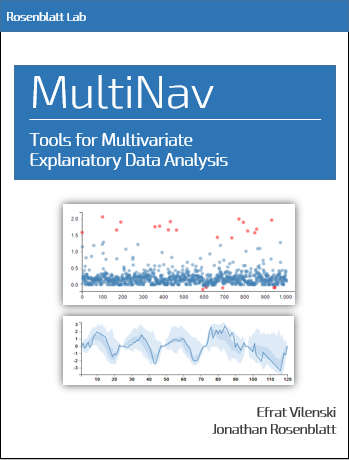

MultiNav R Package
Efrat Vilenski Supervised by Dr. Jonathan Rosenblatt
2020-03-22
Chapter 1 Preface

This is the documentation for MultiNav R Package! Visit the github repository for this project.

This work is licensed under a Creative Commons Attribution-NonCommercial-ShareAlike 3.0 United States License.